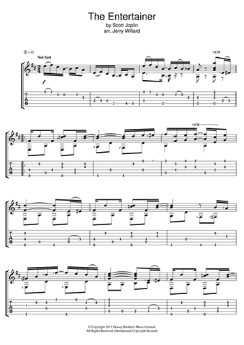

Jazz & Understanding
I can't say why or when in the months since my father and I cleared out Todd's North Side apartment jazz has begun to make more sense. It's not so much that it suddenly makes more sense because it gives tone to my mourning—though it does, as does all good music. Instead, I've come to realize that I hadn't been hearing jazz's more predictable patterns, its shared vocabulary, its various figures or tropes.
Now, I find it easier to anticipate the next chord change, even as the players take liberty and toe the chords, testing the waters for a plunge into their individual solos. In short, even though I already owned Charles Mingus's "Blues and Roots" and Miles Davis's "Kind of Blue," I've begun to hear jazz's larger structural connection to the tradition of the blues. I should have known earlier.
I'd been playing the bass guitar for 15 years, and though not formally trained, I certainly had enough experience playing blues-based music—mostly rock and roll, R & B, and insurgent country—to be able to hear the various forms it takes. But my understanding of music has been generally an intuitive one; I've really had no reason to give much thought to what I do as I pluck and pull at the lower notes.
Nevertheless, what I am now hearing in jazz makes me aware that I've been guilty of a "deafness" similar to what others have exhibited towards the bass.